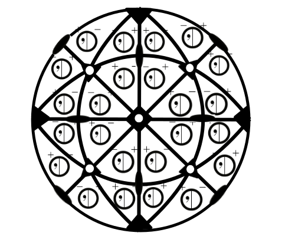

Don't panic! Thought the final point group looks very complicated it includes nothing that we haven't seen before. The only new thing is the curved bold line that represent mirror planes on the diagonal yet still passing through the center. To make the representation more realistic the three folds appear slightly warped. If you imagine the stereograph as a sphere then this should make more sense visually, giving a sense of perspective to the image.
